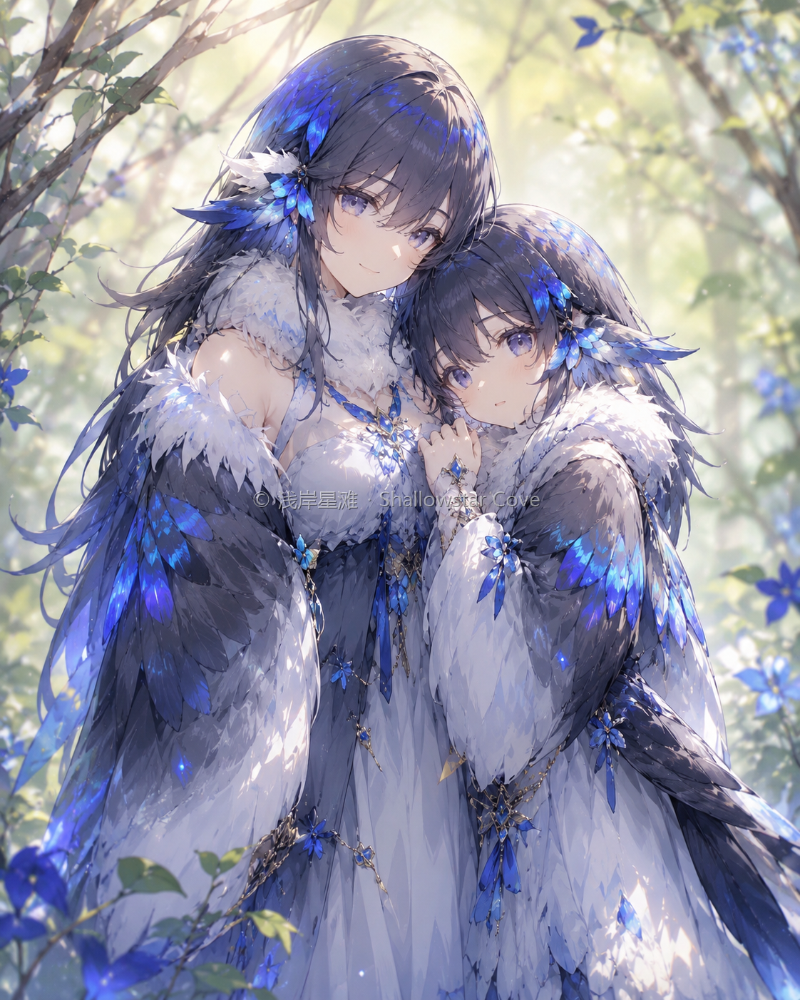
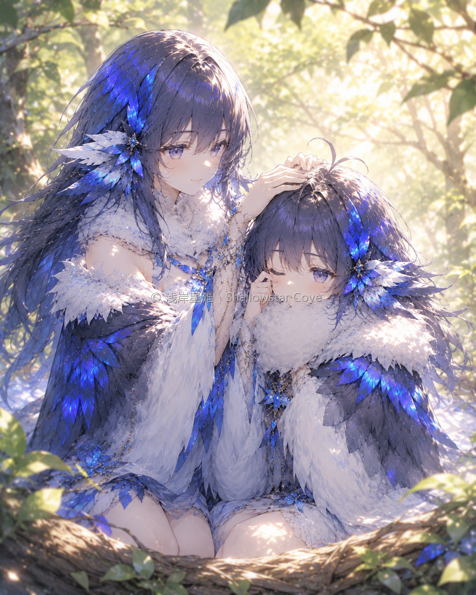
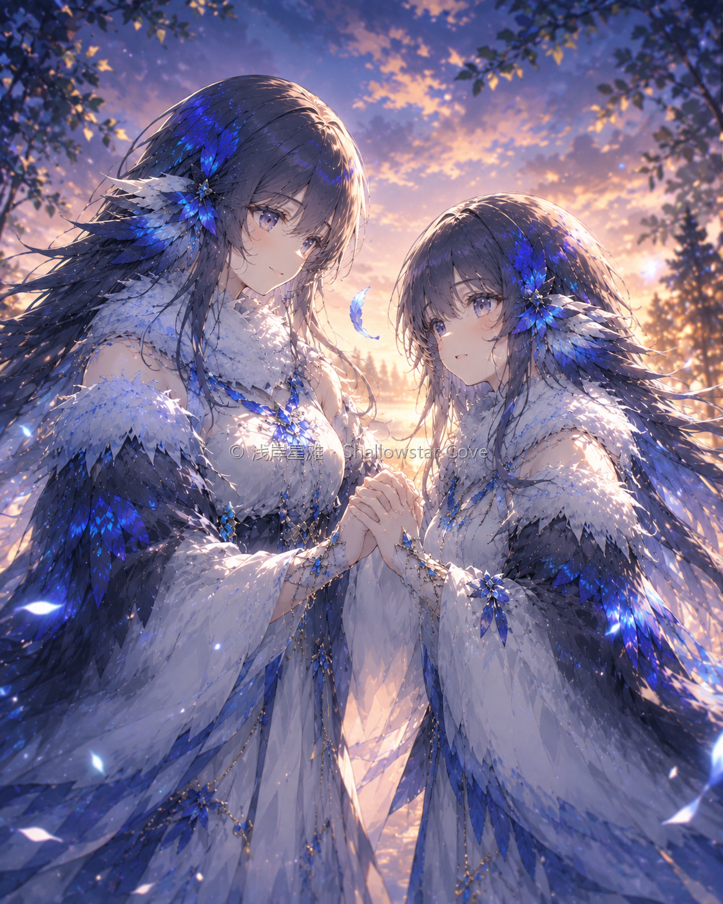
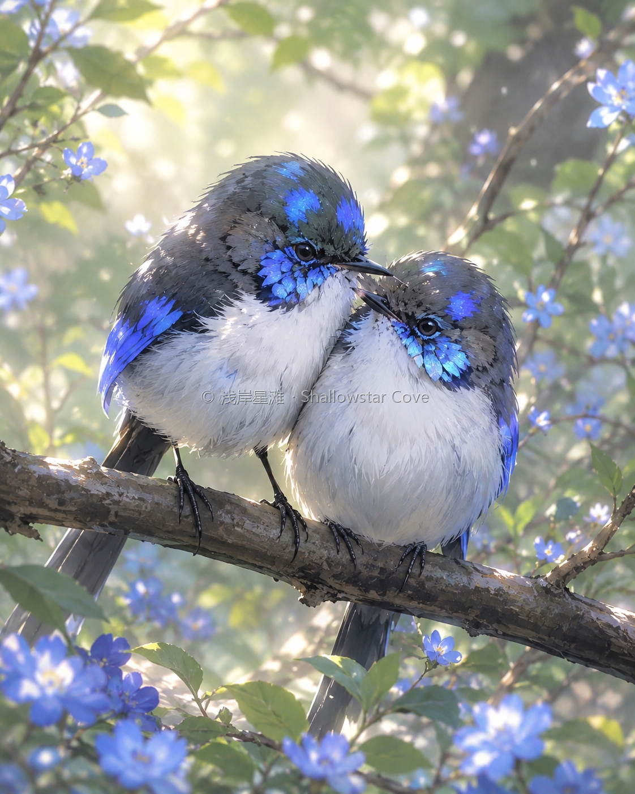

Elder Sister · Lan Yu
澜羽
深蓝、沉静、护妹，像水波一样温柔。她的蓝色灵纹偏钴蓝、深蓝、蓝紫反光，像夜色里的蓝箔羽毛。
两位由蓝色小鸟延展出的拟人姐妹。她们保留灰黑羽背、白色绒腹、钴蓝脸颊羽与细长尾羽， 身上的蓝色不是普通颜料，而是像蓝箔、螺钿与蝶翼结构色一样，在林间微光里轻轻闪烁。

组合名：《澜羽与绒蓝｜蓝灵鸟姐妹》。姐姐名字偏舒展、深蓝、稳定；妹妹名字偏软乎乎、亮蓝、小鸟团子感。
深蓝、沉静、护妹，像水波一样温柔。她的蓝色灵纹偏钴蓝、深蓝、蓝紫反光，像夜色里的蓝箔羽毛。
软萌、黏人、容易炸毛的小鸟妹妹。她的蓝色更偏亮蓝、天蓝、电光蓝，像白绒毛里藏着一点发光的小宝石。
澜羽平时话不多，却会默默注意妹妹有没有冷、羽毛有没有乱、有没有被吓到。 她的温柔不是甜腻的，而是一种很稳定的保护感。她会习惯性地帮绒蓝整理脸颊边的小蓝羽， 这个动作像是在说：别怕，我在这里。
绒蓝好奇心很强，但胆子不算大。看到新东西想靠近前，会先拽一下姐姐的袖子。 她的羽毛经常会乱，尤其是紧张、开心、睡醒的时候。她也不是只会被照顾， 她会笨拙地踮起脚，努力帮澜羽整理耳侧羽饰。
共同视觉核心：灰黑羽色 + 白色绒腹 + 钴蓝灵纹 + 蓝色脸颊羽 + 细长尾羽。 她们是森林枝影里，会反射蓝光的绒羽姐妹。
灰黑长发或深灰蓝长发，带微微羽毛层次感。发尾有蓝紫渐变，像背部羽毛反光。 头侧有蓝白羽饰，位置靠近耳朵和脸颊。眼睛为灰紫蓝或雾蓝色，神情沉静、温柔、带保护感。 衣装适合长羽披肩、白绒领、灰黑羽袖与深蓝尾羽。
灰黑蓬短发或中短发，轮廓更圆、更蓬、更软，头顶可以有一点小翘毛。 眼睛偏浅蓝紫、星蓝或透明紫蓝，眼神懵懵的但很清澈。服装轮廓像白色小绒球： 白绒短斗篷、灰黑小羽披、蓝色羽片点缀与小尾羽。
半身近景构图，森林微光中的蓝灵鸟姐妹，姐姐澜羽低头温柔地替妹妹绒蓝整理脸颊边的蓝色羽毛， 妹妹依赖地靠近姐姐，同时抬手轻碰姐姐耳侧羽饰，形成“互相梳羽”的亲密瞬间。
她们像刚刚在林间停下来休息。绒蓝脸颊边的蓝羽有一点乱，澜羽伸手轻轻替她理顺。 绒蓝没有躲开，反而自然靠近姐姐，眼神软软的、有点害羞，也有点依赖。
澜羽低头、指尖轻拂，动作熟练又小心；绒蓝微微抬头或半眯眼，一只手悄悄碰姐姐耳侧羽毛， 表达“我也想照顾你”的回礼感。
柔和树林背景、枝叶微光、空气尘光、蓝色小花或小果实。背景暖一点，角色冷一点， 让钴蓝螺钿灵纹在阳光下轻轻闪烁。
蓝色部分不能是普通蓝布料，要像蓝色螺钿碎光、蝶翼结构色与宝石釉面。 它是自然、细腻、轻轻闪一下的灵纹，不是硬质赛博光效。
这组场景可以把她们从单张主视觉扩展成一套小系列：日常、雨后、回礼、剧情感都能覆盖。
主视觉。澜羽低头替绒蓝整理脸颊边乱掉的蓝羽，绒蓝靠近姐姐，同时小心地碰姐姐耳边的羽饰。核心情绪是亲密、安抚、互相照顾。
清晨枝头，绒蓝刚睡醒，头顶羽毛炸起来，白绒胸口圆鼓鼓的。澜羽一边忍笑，一边帮她把翘毛顺下去。
雨后森林，澜羽和绒蓝躲在大叶子下面。蓝箔灵纹被雨水映得微微发亮，尾羽尖挂着小水珠。
澜羽坐着，绒蓝踮脚认真整理姐姐耳侧蓝羽，却把一小撮羽毛弄翘。姐姐没有制止，只温柔地看着她。
黄昏森林边缘，一片蓝色羽毛从她们之间飘落。绒蓝拉着姐姐的手，澜羽轻轻回握，风吹起尾羽和发丝。
午后枝影里，姐妹靠在一起短暂休息。光斑落在羽披上，蓝色灵纹像螺钿一样一闪一闪，安静又柔软。
已经把目前生成好的插画全部整合进页面里了。第一页主视觉、第二张“互相整理羽毛”，以及后续几个延展场景都在这里，可以直接作为角色展示页使用。
澜羽与绒蓝的基础形象图。重点确立姐妹的整体外貌语言：灰黑羽背、白色绒腹、钴蓝灵纹、蓝色脸颊羽与细长尾羽，整体为二次元治愈系清透感画风。

这一张是最核心的关系主视觉。姐姐澜羽低头轻轻替绒蓝整理脸颊边的蓝羽，妹妹依赖地靠近姐姐，用“梳羽”的方式表达安抚、照顾与依赖。

清晨枝头的日常场景。绒蓝刚睡醒，头顶翘毛微微炸起，澜羽轻轻替她顺毛，画面氛围更偏可爱与生活感。

绒蓝认真地替澜羽整理耳侧羽饰，回应姐姐平日里的照顾。这个场景突出“被照顾的小鸟，也会努力学着照顾别人”。

黄昏剧情感场景。暖金与冷蓝交织，姐妹在晚霞下牵起彼此的手，强化故事性与情绪张力。

雨后森林的保护场景。大叶片为她们遮雨，羽毛与发丝沾着水珠，蓝箔灵纹在湿润光线里格外通透梦幻。

保留原始鸟类形态的二次元清透感版本。两只小鸟停在枝头互相贴近、轻轻梳羽，适合放进森林板块，作为“森林生灵图鉴 / 林间观察”内容入口。
这对蓝灵鸟姐妹的动物原型，可以设定为 辉蓝细尾鹩莺（Superb Fairywren）。它们体型小、羽色清透，尤其是脸颊与翼上的亮蓝色羽斑非常有辨识度，也很适合延展成森林板块里的治愈系小生灵。
体型小而圆润，腹部多为白色或浅灰色，背部偏灰黑色；最有记忆点的是头部、脸颊、肩背和尾部出现的亮蓝色羽斑，看起来像会在阳光下发光的小蓝碎片。
主要分布于澳大利亚东部、东南部及塔斯马尼亚一带，常见于灌木丛、林地边缘、花园和低矮植被区域。它们偏爱有遮蔽感的环境，因此非常适合放进“森林 / 林缘”主题设定里。
它们性格活泼，常在低矮枝叶之间活动，喜欢在灌木附近跳跃觅食，主要吃昆虫及小型无脊椎动物。平时会小范围结伴活动，动作敏捷又轻巧。
这一类小鸟具有较强的社会性，最动人的地方之一，就是会出现互相梳理羽毛、彼此贴近和协同照顾的行为。因此把它们延展成一对关系亲密的姐妹鸟，非常自然也很治愈。
它们兼具“白绒软感、蓝色灵纹感、敏感警觉的小动物气质”三个优点。既能做写实偏动物的森林生灵，也能顺滑转成拟人角色，不会割裂。
建议归入“森林板块 / 森林生灵图鉴 / 林间观察”。页面里可以先展示动物版本，再延伸到拟人姐妹设定，这样会更完整，也更有世界观层次。